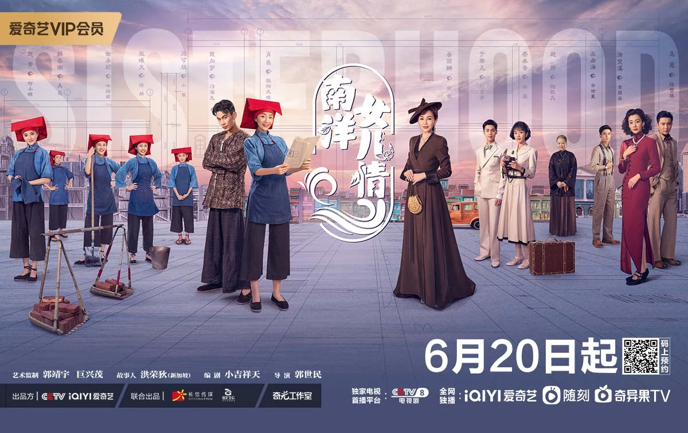

Built around Guo Jingyu
Founded in 2018 around a director-producer with roughly three decades in Chinese television. Guo controls about 62% through Kang Ru Investments; his spouse Yue Lina is an executive director.
Strategy and commercial review · SGX: XJB
A proven franchise inside a model that pays the producer last.
G.H.Y makes long-form and micro dramas for China's largest platforms, then carries the script, approval, production and collection risk. Strange Tales of Tang Dynasty proves the franchise model; cash conversion shows why proof is not yet enough.

00 · Evidence · Research score
G.H.Y sits in the Fragile band. Franchise IP keeps Market Position close to Kingsmen's, but five-year losses, negative cumulative free cash flow and rising bank debt overwhelm that strength.
Fragile · sensitivity range 30-38.
The label describes business quality and future potential. It is not a buy or sell call.
The gap to Kingsmen is almost entirely financial: 8.5 versus 24.3 points in Financial Strength.
Owned IP and iQIYI partnerships lift the score. Cash flow, buyer power and one-country concentration hold it back.
| Component | Weight | Rating /5 | Points | Assessment |
|---|---|---|---|---|
| Five-year revenue CAGR | 6 | 3.0 | 3.6 | 6.3% a year in RMB. |
| Net profit margin | 7 | 0.4 | 0.6 | Five-year median -13.3% excluding the football charge. |
| ROIC / ROE | 9 | 0.4 | 0.7 | Five-year median ROE about -6.5%. |
| Cash-flow stability | 9 | 1.0 | 1.8 | Positive free cash flow in two of five years. |
| Balance-sheet strength | 9 | 1.0 | 1.8 | Net cash at FY2025, net debt by June 2026. |
| Component | Weight | Rating /5 | Points | Assessment |
|---|---|---|---|---|
| Brand recognition | 2 | 3.0 | 1.2 | Asian Academy and Golden Rooster recognition. |
| Competitive advantage | 7 | 3.0 | 4.2 | Franchise IP is slow to copy, but lacks a margin premium. |
| Market share | 4 | 1.0 | 0.8 | TV revenue is about 3% of one buyer's content budget. |
| Customer relationships | 5 | 3.0 | 3.0 | Repeat iQIYI seasons; retention is undisclosed. |
| Geographic reach | 2 | 1.0 | 0.4 | China generated 96.9% of FY2025 revenue. |
| Component | Weight | Rating /5 | Points | Assessment |
|---|---|---|---|---|
| Industry growth | 6 | 2.0 | 2.4 | Long-form spending is soft; micro-drama is growing. |
| Technology adoption | 4 | 1.0 | 0.8 | AI is in production; benefits remain unquantified. |
| New-market expansion | 6 | 3.0 | 3.6 | Micro-drama teams and releases are live. |
| Revenue diversification | 5 | 1.0 | 1.0 | TV and film were 95.5% of revenue. |
| Strategic partnerships | 4 | 4.0 | 3.2 | Binding iQIYI co-productions and park ventures. |
| Component | Weight | Rating /5 | Points | Assessment |
|---|---|---|---|---|
| Economic resilience | 3 | 1.0 | 0.6 | Losses in FY2022, FY2023 and FY2024. |
| Customer diversification | 4 | 2.0 | 1.6 | Four platforms dominate demand. |
| Technology resilience | 3 | 3.0 | 1.8 | Premium drama is difficult to automate. |
| Regulatory resilience | 2 | 2.0 | 0.8 | Licence- and VIE-dependent in one regime. |
| Operational resilience | 3 | 2.0 | 1.2 | Founder-centric with event-loss precedent. |
01 · Exhibit · The business
The group develops and produces screen content, presents selected concerts, and supports its slate with talent, costumes, props and training. Its edge is story ownership; its constraint is the cash cycle between greenlight and payment.
Subscriptions and advertising shape buyer budgets.
Track record wins the greenlight; scripts become approved titles.
Deal terms, budget control and collection decide value.
Demand reaches G.H.Y late. Cash reaches it later still.
G.H.Y is not simply a studio. It combines a founder-led story engine, production capacity, platform relationships and selective live-event exposure, but almost all reported economics still come from commissioned screen production.
Founded in 2018 around a director-producer with roughly three decades in Chinese television. Guo controls about 62% through Kang Ru Investments; his spouse Yue Lina is an executive director.
G.H.Y joined the SGX Mainboard on 18 December 2020. At S$0.053 on 29 October 2026, the shares were down about 92% from the offer price and traded only intermittently.
The group is headquartered across Singapore and the PRC. China generated 96.9% of FY2025 revenue through entities controlled by VIE contracts; overseas concert markets contributed no FY2025 revenue.
Original stories, franchise bibles and in-house writing create the only asset a rival cannot bid away.
Directing, casting, costumes, sets and AI-assisted workflows turn IP into an approved, deliverable title.
Fixed fees create near-term revenue; profit share, sequels, micro-dramas and iQIYI Land create delayed franchise upside.
Source review slides 2-4 and 9. Ownership and market-price observations are date-sensitive.
02 · Exhibit · Portfolio
Project images are treated as exhibits: each title matters only to the extent that audience memory lowers the risk of the next greenlight.
Why it matters: stadium touring can be large, but scarce superstar dates make it an option rather than a stable segment.
Why it matters: the franchise supports sequels, spin-offs and offline licensing that a rival cannot simply rebid.
Why it matters: Singapore-China stories are a cultural niche that differentiates G.H.Y from larger mainland peers.
Tang improved its audience score between seasons, won an Asian Academy award and supported a third season.
Micro-drama extensions and a mid-length Ferryman title test whether known worlds travel into cheaper formats.
Tang entered an immersive theatre in Yangzhou; G.H.Y later took minority stakes in Beijing and Kaifeng park ventures.
The slate matters title by title. Delivery timing determines reported revenue, while format, partner and deal structure determine whether a successful audience result becomes cash.
| Title | Format | Partner | Status and economic signal |
|---|---|---|---|
| Strange Tales of Tang Dynasty 3 | Long-form drama | iQIYI, co-producer | Premiered 8 Nov 2025; the core franchise asset. |
| The Ferryman: 10 Years | Mid-length drama | iQIYI | Ended Jun 2026 with a reported heat record of 8,661. |
| My Destiny | TV drama | CCTV-8 | On air from 7 Mar 2026; evidence of broadcast reach. |
| Beautiful Fairytale | Fantasy, AI-assisted | iQIYI joint production | Shot through roughly Jun 2026 as a planned franchise. |
| Tang spin-offs | Two micro-dramas | iQIYI | Reportedly broke platform micro-drama records. |
| The Red Cradle / Reviving Youth | Drama / TV show | Not disclosed | Recognised in 1H2026 revenue. |
| Jolin Tsai PLEASURE, Changsha | Concert | Not applicable | Staged 21 Mar 2026 after a quiet FY2025. |
Source review slide 16; G.H.Y FY2025 annual report, 1H2026 results and cited corporate announcements.
03 · Evidence · Segments
Concerts were 45.9% of FY2023 revenue and only 3.2% two years later. The portfolio has contracted back to the core just as G.H.Y changes the core's deal model.
Revenue concentration makes title timing look like strategy. Portfolio quality improves only when a second engine becomes material.
| FY2025 segment | Revenue | Share | Gross profit | Gross margin | YoY revenue |
|---|---|---|---|---|---|
| TV Program & Film Production | RMB488.1m | 95.5% | RMB93.9m | 19.2% | +66.9% |
| Concert Production | RMB16.5m | 3.2% | RMB2.5m | 15.2% | -85.8% |
| Others | RMB6.6m | 1.3% | RMB2.0m | 29.9% | -24.2% |
| Group | RMB511.2m | 100.0% | RMB98.4m | 19.2% | +22.4% |
Screen production supplied 95.5% of revenue and 95.4% of gross profit. A handful of delivery acceptances can move the whole year.
Live events were 45.9% of FY2023 revenue and roughly 60% of gross profit, then only 3.2% of FY2025 revenue.
TV gross margin fell to 3.9% in 1H2026 as profit-sharing reduced upfront economics while leaving hit upside for later.
G.H.Y discloses segment revenue and gross profit, not segment operating profit.
04 · Evidence · Financials
FY2025 was the only profitable year since FY2021. The gross-profit recovery was real, but government grants exceeded pre-tax profit and the next half-year returned to loss.
FY2025's 19.2% margin recovered from a 10.0% trough. 1H2026 then fell to 4.3%.
Cumulative net result from FY2021 to FY2025. FY2025 was the only profitable year after FY2021.
Removing RMB13.5m of government grants from RMB6.4m of pre-tax profit gives an indicative loss of roughly RMB7.1m.
At the FY2025 cost base, small changes in revenue or gross margin move pre-tax profit disproportionately.
| Period | Revenue | Gross profit | Gross margin | Pre-tax result | Net result | Net margin |
|---|---|---|---|---|---|---|
| FY2021 | 399.9 | 104.4 | 26.1% | 31.9 | 16.6 | 4.2% |
| FY2022 | 223.2 | 69.5 | 31.2% | -54.4 | -51.1 | -22.9% |
| FY2023 | 388.0 | 97.9 | 25.2% | -57.8 | -51.7 | -13.3% |
| FY2024 | 417.6 | 41.9 | 10.0% | -156.3 | -144.3 | -34.5% |
| FY2025 | 511.2 | 98.4 | 19.2% | 6.4 | 8.7 | 1.7% |
| 1H2026 | 162.0 | 6.9 | 4.3% | -36.5 | -31.4 | -19.4% |
RMB million except margins. FY2021-FY2022 were reported in Singapore dollars and converted in the source review.
FY2025 gross profit rose 135% as revenue increased 22.4% and the gross margin recovered by 9.2 percentage points.
Pre-tax result after removing disclosed government grants. This does not remove impairments or expected-credit-loss charges.
1H2026 profit-sharing and title mix pulled the group below its roughly 18% gross-margin break-even level.
05 · Evidence · Cash and balance sheet
Trade receivables, contract assets and productions in progress absorb the balance sheet. The problem is not simply debt; it is a widening gap between delivery and collection.
FY2025 trade receivable days rose to 137 from 78, while customer advances fell sharply from their 2023 level.
G.H.Y returned about RMB9.9m through dividend and buybacks in FY2025 against negative free cash flow.
| Period | Operating cash flow | Free cash flow | Trade receivables | Contract assets | Productions in progress | Total content working capital |
|---|---|---|---|---|---|---|
| FY2021 / Dec 2021 | -222.3 | -235.2 | Detailed working-capital composition not shown in the source slide | |||
| FY2022 / Dec 2022 | 29.0 | 15.2 | Detailed working-capital composition not shown in the source slide | |||
| FY2023 / Dec 2023 | 12.7 | 7.4 | 145.5 | 17.6 | 181.4 | 344.5 |
| FY2024 / Dec 2024 | -35.0 | -55.1 | 157.2 | 44.4 | 89.1 | 290.8 |
| FY2025 / Dec 2025 | -53.5 | -57.3 | 131.3 | 87.9 | 191.6 | 410.8 |
| Jun 2026 balance | 1H operating outflow: -53.2 | 139.7 | 109.7 | 155.3 | 404.7 | |
Free cash flow was positive only in FY2022 and FY2023. Cumulative free cash flow across FY2021-FY2025 was roughly negative RMB325m.
RMB187.5m of net cash at Dec 2023 became RMB51.9m of net debt by Jun 2026 as collections slowed and bank loans rose.
Advances at Dec 2025 were down from RMB89.1m two years earlier, leaving G.H.Y to finance more of the production cycle itself.
RMB million. Free cash flow is operating cash flow less purchases of plant, equipment and intangibles. The Dec 2023 contract-asset value is the residual implied by the source total.
06 · Evidence · Slate and demand
Viewer time and advertising shape platform budgets. Platforms then choose a handful of titles, approvals follow, revenue is recognized on delivery, and cash arrives months later.
Subscriptions, ads and micro-drama payments set the buyers' budget envelope.
iQIYI, Tencent, Youku and CCTV greenlight titles, increasingly around proven IP.
Scripts, shoots and schedules determine when a completed title reaches the platform.
Revenue appears on delivery or over production; collection follows after the buyer accepts it.
Premiered November 2025. The wider franchise includes record-setting micro-drama spin-offs and an iQIYI Land theatre.
Ended June 2026 with a reported iQIYI heat record of 8,661.
On air from March 2026 on CCTV-8.
Shot through June 2026 as a planned franchise; timing remains part of the FY2026 outcome.
Subscriptions and advertising shape buyer budgets, but G.H.Y sees the signal only when a platform greenlights a title.
Large-show box office reached RMB32.4bn in 2025; scarce superstar dates and artist economics constrain G.H.Y.
CCTV slots, approvals, Nanyang stories and local production grants can matter as much as audience ratings.
No single macro variable explains all three businesses. Screen production reacts to platform budgets with long lags, concerts react quickly to fan spending, and policy-linked projects follow approval and cultural calendars.
| Economic variable | Transmission channel | Most exposed | Likely lag | Observed consequence |
|---|---|---|---|---|
| Platform subscriptions and ads | Content budgets at iQIYI, Tencent and Youku | TV and film | 6-18 months | iQIYI revenue fell 7% in 2025; platforms leaned harder on proven IP and profit share. |
| Consumer spending | Concert tickets and paid micro-drama episodes | Concerts / micro-dramas | 0-6 months | Presales and pay-per-episode income move before long-form delivery revenue. |
| Regulation and approvals | NRTA filing, review and scheduling | TV and film | 6-24 months | Delayed delivery shifts revenue; RMB16.5m of productions was written off in FY2024. |
| Interest rates and credit | Bank funding of working capital | Group | Immediate | Finance costs rose 40% in 1H2026 as bank borrowings reached RMB126.8m. |
| SGD / RMB | SGD functional currency with RMB earnings | Group | Immediate | S$8.8m FX loss in FY2022 and RMB10.4m translation loss in 1H2026. |
| AI production cost | Lower cost per finished minute | Micro-dramas | Persistent | G.H.Y can produce more cheaply, but the same technology also floods the supply side. |
Users exceeded 800m and the market passed RMB100bn in 2025, but 430,000 titles appeared in Jan-Aug 2026 and more than 90% were AI-generated.
China's 5,000-plus-seat shows drew 43.4m attendees in 2025. The bottleneck is access to superstar tours, not fan demand.
iQIYI content spend slipped 2% to RMB15.45bn while drama filings increased 33%, favouring proven IP and co-production.
The FY2025 disconnect is instructive: iQIYI revenue fell 7%, yet G.H.Y TV revenue rose 67% as delayed titles were delivered. Revenue tracks acceptance dates before it tracks current demand.
07 · Evidence · Market and peers
The closest listed comparison, Linmon Media, is larger, more profitable and paid faster. G.H.Y's answer is not to imitate its scale, but to quantify the value of the franchise niche Linmon cannot copy.
Linmon also held RMB782.8m of cash and disclosed micro-drama revenue. G.H.Y held RMB89.4m and does not.
G.H.Y's entire FY2025 TV and film revenue was roughly 3.2% of iQIYI's content budget, before considering three other major buyers.
Year-end cash at G.H.Y and Linmon respectively. The closest peer can finance more titles and wait longer for collections.
Linmon discloses title counts, short-drama revenue and overseas sales. G.H.Y does not yet give investors the same franchise evidence.
| Capability | G.H.Y | Huace | Linmon | Strawbear | UnUsUaL |
|---|---|---|---|---|---|
| FY2025 revenue | RMB511m | RMB2,828m | RMB863m | RMB1,029m | S$34m, 1H |
| Gross margin | 19.2% | 23.3% | 26.6% | 11.3% | 12.6%, 1H |
| Net margin | 1.7% | 6.8%, core 0.7% | 3.5% | -0.2% | 4.5%, 1H |
| Overseas revenue share | 3.1% | 6.6% | 10.3% | Not disclosed | Singapore-based |
| Long-form drama | Strong | Very strong | Strong | Strong | None |
| Micro-dramas | Developing | Not disclosed | Strong, 141 titles | Not disclosed | None |
| Concerts and live | Moderate | Low | Low | Low | Very strong |
| Owned franchise IP | Strong | Strong | Strong | Moderate | Low |
Huace and Linmon are larger, while Linmon's 60 receivable days compare with about 137 at G.H.Y.
Singapore-China stories, founder-led franchises and online-to-offline extensions are harder for a larger peer to reproduce.
Title counts, micro-drama revenue, receivable ageing and franchise profit share would make the differentiation measurable.
08 · Decision · Strategic frameworks
Commissioned production sits between powerful buyers and crowded supply. Owned franchises change the equation because no rival can sell the same sequel, spin-off or immersive extension.
Long-form filings rose while platform budgets stayed flat; micro-drama supply exploded.
Four major platforms commission most long-form drama, and G.H.Y waits about 137 days to be paid.
Stars and writers are scarce, but cast-pay rules and in-house creative leadership limit the pressure.
Long-form requires trust and approval; AI micro-drama is cheap to enter.
Short video, games and AI-generated content compete for the same evenings.
Franchises, profit-sharing, micro-drama spin-offs and offline licensing are all attempts to capture the hit rent instead of only the production fee.
This is where switching costs bite: no rival can offer Tang, but G.H.Y does not separate the franchise's return.
FY2025 and 1H2026 TV gross margins show the part of the chain where buyer power and title timing dominate.
Concert margins can look attractive, but superstar rent and cancellation tail risk sit with the promoter.
NRTA filing and CCTV scheduling shape which titles can exist. Singapore-China ties support Nanyang stories; grants equalled 2.1 times FY2025 pre-tax profit.
Platform spending follows subscriptions and ads. RMB earnings inside an SGD functional currency created material FX and translation losses.
Micro-drama users exceeded 800m while live music drew fans across provinces. Long-form competes with both poles.
G.H.Y runs two AI teams and signed an Alibaba Cloud MOU, but cheap generation also expands supply dramatically.
Micro-drama review tiers and AI labels add process; VIE contracts control PRC entities that generated 96.9% of revenue.
Sets, travel and physical experiences create impacts, while SGX climate disclosure adds cost for a small issuer.
Pr(Hit) = f(franchise, platform, budget, format, year)Gross margin = f(hit, profit share, hit x profit share, delay, platform)The analytical question is whether franchise status raises hit probability, and whether profit share pays only when a title succeeds. Approval and broadcast delays must be separated from title quality.
Demand for a drama is uncertain until audiences see it; outcomes follow a power law, making a few hits disproportionately valuable.
A sequel carries audience memory, proven characters and platform evidence. Tang's rising score and spin-offs support that case.
Fixed fees surrender hit rent. Profit share keeps it, but transfers funding and flop risk to G.H.Y before the audience verdict arrives.
The source review's switching-cost illustration shows the mechanism, not company guidance: a platform may rationally pay more for franchise hit probability than it saves by changing producer.
09 · Decision · Risk matrix
Select a risk to inspect its trigger and mitigation. Labels carry the status so meaning is not dependent on colour.
| Risk | Probability / impact | How economics are damaged | Leading indicator | Primary mitigation |
|---|---|---|---|---|
| Platform payment and concentration | High / High | Receivables, credit losses and bank debt rise. | Receivable days; contract-asset ageing | Advances, factoring and a multi-platform slate |
| Profit-share hit risk | High / Medium-high | Margins collapse while G.H.Y waits for hits. | Heat index; Douban; half-year margin | Franchise-first selection and minimum guarantees |
| Approval and broadcast delay | Medium-high / High | Revenue slips or productions are written off. | Filing status; work-in-progress write-offs | Early filing and genre choice |
| Liquidity and refinancing | Medium-high / High | Net debt grows and the dividend comes under pressure. | Net cash; operating cash flow | Release working capital and gate new projects |
| Live-event counterparty | Medium / High | A cancellation creates a loss far beyond segment profit. | Fee terms; deposits at risk | Co-promotion and cancellation cover |
| Governance and structure | Medium / Medium-high | VIE and minority-shareholder exposure widen the discount. | VIE rules; free float; related-party activity | Independent oversight and fuller disclosure |
Guo Jingyu has a strong economic reason to build long-term value, but also controls the votes that matter.
PRC media earnings are controlled by contract rather than equity. The prospectus itself flags enforcement uncertainty.
Dividend and buybacks were funded in a year with negative RMB57.3m free cash flow, while the company later borrowed more.
Paid every year since listing, including four loss years; roughly RMB5.9m annually at the source review's exchange rate.
RMB99.5m remained earmarked for concert expansion, exceeding unrestricted cash of RMB75.0m at Jun 2026.
The shares traded on few days. The quoted price is a weak signal where turnover is so thin.
10 · Decision · Strategy and outlook
The sequence matters: collect cash, concentrate creative capital on proven IP, use micro-drama to test cheaply, and refuse uncapped live-event risk.
Tie billing to milestones and factor platform receivables. Cutting receivable days from 137 to 100 could release roughly RMB52m.
Prioritize sequels and accept profit-share only where a franchise has evidence. Two margin points are worth about RMB9.8m.
Ten RMB1m pilots would cost RMB10m; promote only proven worlds and characters to long-form.
Use capped fees, presale gates and cancellation cover. Never repeat an event loss on the scale of RMB86.1m.
Interactive FY2026 scenario
RMB280m of 2H revenue at a 13.0% gross margin.
Illustrative model
Versus RMB511.2m
Still loss-making
At the FY2025 cost base: roughly RMB1.5m, RMB6.4m and RMB11.3m of pre-tax profit across the three revenue cases.
About 80% of FY2025 pre-tax profit. Break-even gross margin was roughly 18.0%, or 20.6% without grants.
A 3% cost-of-sales increase with no pass-through equals about 1.9 times FY2025 pre-tax profit.
| Illustrative FY2026 model | Bear | Base | Bull |
|---|---|---|---|
| 1H2026 revenue, actual | 162.0 | 162.0 | 162.0 |
| 2H2026 revenue | 220.0 | 280.0 | 331.5 |
| FY2026 revenue | 382.0 | 442.0 | 493.5 |
| Growth vs FY2025 | -25.3% | -13.5% | -3.5% |
| 2H2026 gross margin | 8.0% | 13.0% | 16.9% |
| FY2026 gross margin | 6.4% | 9.8% | 12.8% |
| FY2026 pre-tax result | About -62 | About -44 | About -24 |
All cases begin with actual 1H2026 revenue of RMB162.0m and the RMB36.5m pre-tax loss already incurred.
Revenue is anchored to 2H2024-2H2025 and trimmed for profit-share deals that defer upfront recognition.
The bull case repeats 2H2025 revenue and margin, yet cannot fully repair the weak first half.
Illustrative Beyond Our Gallery model, not company guidance or a forecast. It is designed to expose which assumptions must change for break-even.
Tang improved from Douban 8.0 to 8.6, won an Asian Academy award and entered an iQIYI Land theatre. Ferryman set a reported mid-length heat record; FY2025 TV margin reached 19.2%.
FY2025 free cash flow was negative RMB57.3m, receivable days reached 137 and net cash became RMB51.9m of net debt by Jun 2026. The 1H2026 margin was 4.3%.
Beautiful Fairytale deliveries, receivable days, net debt, the dividend, micro-drama disclosure and recovery of the Al Nassr-related receivable.
The score rises with repeatable franchise economics and cash collection. It falls if net debt grows while dividends and undeployed IPO proceeds remain untouched.
Sources and evidence
Evidence grade B. Retention, title-level profit-share economics and technology benefits remain partly undisclosed.
Research standard
Figures are in renminbi unless stated. Market data are as of 29 October 2026. This is independent research for education, not an investment recommendation or price target.
Drama and concert artwork was supplied with the research brief and is presented as editorial portfolio evidence.